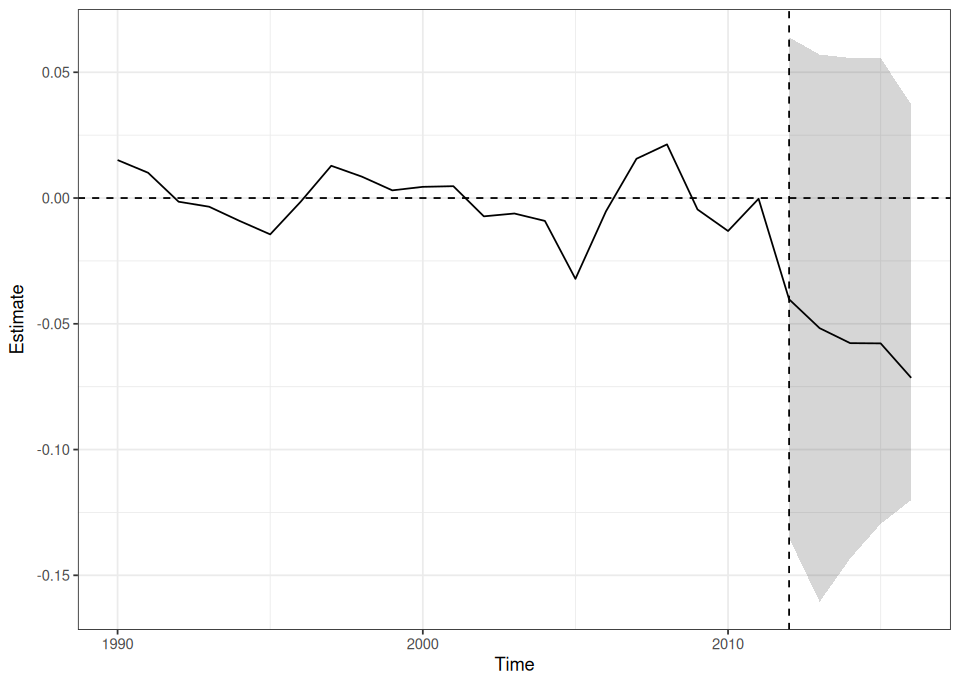
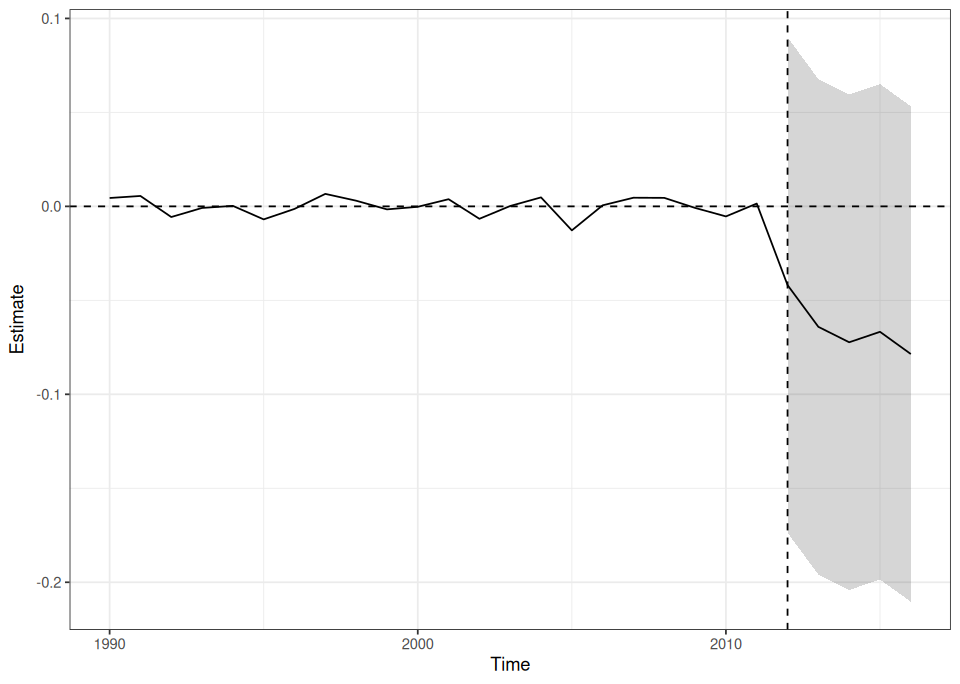
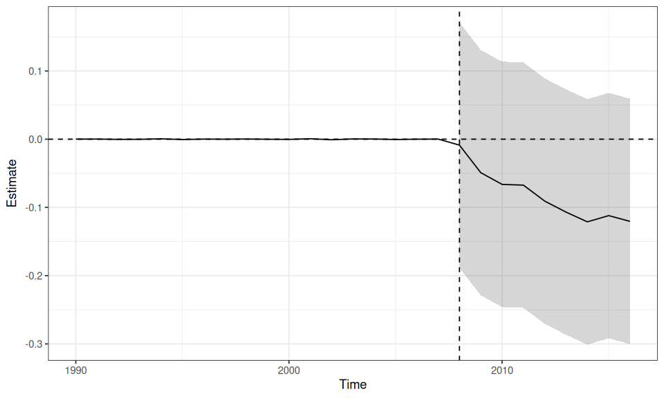

Lab: Augmented SCM With Kansas#
Use the R kernel. Keep the supplied data/ folder beside this notebook. Run cells in order after installing the documented R environment. Data loading is entirely local.
How To Use This Page#
Use this page as the advanced SCM lab.
Keep the Synthetic Control overview open for the baseline design conditions.
Use the Augmented Synthetic Control Method notes when you want the paper-level rationale for controlled extrapolation.
Read this lab as a design comparison, not as a software upgrade tutorial.
End by deciding whether the Kansas case supports classical SCM, augmented SCM, or neither.
The code is shown but not executed when the site is rendered. That keeps the page readable while preserving a runnable workflow for teaching and self-study.
Training Goal#
Use the Kansas tax-cut case to understand why augmentation exists:
build a clean comparative-case panel
fit a classical SCM benchmark
fit a ridge-augmented SCM on the same outcome
compare the two designs on pre-treatment fit, interpretability, and extrapolation risk
state whether augmentation solves a real design problem or only hides one
Dataset At A Glance#
This lab uses augsynth::kansas, a quarterly state panel used in the ASCM paper’s empirical illustration.
Substantive case: the Kansas tax cuts associated with the Brownback period
Teaching role: advanced extension case rather than first exposure to SCM
Main outcome here: log GDP per capita
Main lesson: poor classical fit is a warning signal, and augmentation is a controlled response to that warning rather than an automatic improvement
What To Hand Back#
By the end of the lab, you should be able to report:
how the Kansas panel was collapsed into an annual comparative-case dataset
whether classical SCM alone fits Kansas well enough before treatment
what changes when ridge augmentation is introduced
why negative or non-simplex weighting is a cost rather than a free benefit
whether the design should be defended with classical SCM, augmented SCM, or abandoned for a different strategy
Step 1: Load Packages And Inspect The Kansas Panel#
options(repr.plot.width = 8, repr.plot.height = 4.8)
data_helpers <- c("data/load-data.R", "../data/load-data.R", "docs/labs/data/load-data.R")
data_helpers <- data_helpers[file.exists(data_helpers)]
if (!length(data_helpers)) stop("Extract the complete lab ZIP, including its data folder, before running.")
source(data_helpers[[1]])
options(repr.plot.width = 8, repr.plot.height = 4.8)
required_packages <- c(
"augsynth",
"dplyr",
"ggplot2",
"tibble"
)
missing_packages <- required_packages[!vapply(
required_packages,
requireNamespace,
logical(1),
quietly = TRUE
)]
if (length(missing_packages)) stop("Install the documented R environment first; missing: ", paste(missing_packages, collapse=", "))
invisible(lapply(required_packages, library, character.only = TRUE))
kansas <- qed_data("kansas")
kansas |>
glimpse()
Attaching package: ‘dplyr’
The following objects are masked from ‘package:stats’:
filter, lag
The following objects are masked from ‘package:base’:
intersect, setdiff, setequal, union
Rows: 5,250
Columns: 32
$ fips <dbl> 1, 1, 1, 1, 1, 1, 1, 1, 1, 1, 1, 1, 1, 1, 1, 1, 1,…
$ year <dbl> 1990, 1990, 1990, 1990, 1991, 1991, 1991, 1991, 19…
$ qtr <dbl> 1, 2, 3, 4, 1, 2, 3, 4, 1, 2, 3, 4, 1, 2, 3, 4, 1,…
$ state <chr> "Alabama", "Alabama", "Alabama", "Alabama", "Alaba…
$ gdp <dbl> 71610.00, 72718.25, 73826.50, 74934.75, 76043.00, …
$ revenuepop <dbl> NA, NA, NA, NA, NA, NA, NA, NA, 1443.286, 1443.286…
$ rev_state_total <dbl> NA, NA, NA, NA, NA, NA, NA, NA, NA, NA, NA, NA, NA…
$ rev_local_total <dbl> NA, NA, NA, NA, NA, NA, NA, NA, NA, NA, NA, NA, NA…
$ popestimate <dbl> 4050055, 4062330, 4074606, 4086881, 4099156, 41128…
$ qtrly_estabs_count <dbl> 86586, 86188, 86799, 87915, 91626, 91880, 93501, 9…
$ month1_emplvl <dbl> 1571410, 1599077, 1599355, 1612133, 1581388, 15988…
$ month2_emplvl <dbl> 1572535, 1610310, 1604376, 1614907, 1580574, 16079…
$ month3_emplvl <dbl> 1581994, 1618397, 1611040, 1615504, 1590768, 16110…
$ total_qtrly_wages <dbl> 7832159837, 8107228382, 8102930357, 8725347965, 81…
$ taxable_qtrly_wages <dbl> 0, 0, 0, 0, 0, 0, 0, 0, 0, 0, 0, 0, 0, 0, 0, 0, 0,…
$ avg_wkly_wage <dbl> 382, 388, 388, 416, 396, 404, 406, 432, 414, 416, …
$ year_qtr <dbl> 1990.00, 1990.25, 1990.50, 1990.75, 1991.00, 1991.…
$ treated <dbl> 0, 0, 0, 0, 0, 0, 0, 0, 0, 0, 0, 0, 0, 0, 0, 0, 0,…
$ gdpcapita <dbl> 17681.24, 17900.62, 18118.69, 18335.44, 18550.89, …
$ lngdp <dbl> 11.17899, 11.19435, 11.20947, 11.22437, 11.23905, …
$ lngdpcapita <dbl> 9.780260, 9.792591, 9.804699, 9.816591, 9.828273, …
$ revstatecapita <dbl> NA, NA, NA, NA, NA, NA, NA, NA, NA, NA, NA, NA, NA…
$ revlocalcapita <dbl> NA, NA, NA, NA, NA, NA, NA, NA, NA, NA, NA, NA, NA…
$ emplvl1capita <dbl> 0.3879972, 0.3936354, 0.3925178, 0.3944654, 0.3857…
$ emplvl2capita <dbl> 0.3882750, 0.3964006, 0.3937500, 0.3951441, 0.3855…
$ emplvl3capita <dbl> 0.3906105, 0.3983913, 0.3953855, 0.3952902, 0.3880…
$ emplvlcapita <dbl> 0.3889609, 0.3961424, 0.3938844, 0.3949666, 0.3864…
$ totalwagescapita <dbl> 1933.840, 1995.709, 1988.642, 2134.965, 1992.086, …
$ taxwagescapita <dbl> 0, 0, 0, 0, 0, 0, 0, 0, 0, 0, 0, 0, 0, 0, 0, 0, 0,…
$ avgwklywagecapita <dbl> 382, 388, 388, 416, 396, 404, 406, 432, 414, 416, …
$ estabscapita <dbl> 0.02137897, 0.02121639, 0.02130243, 0.02151152, 0.…
$ abb <chr> "AL", "AL", "AL", "AL", "AL", "AL", "AL", "AL", "A…
Checkpoint:
The raw data are quarterly and much richer than the smoking case.
That makes this a better lab for weak-fit problems than for first-pass SCM mechanics.
Step 2: Collapse To A Clean Annual Panel#
This is a teaching choice. The underlying data are quarterly, but an annual panel makes the design logic easier to inspect in a first advanced lab.
options(repr.plot.width = 8, repr.plot.height = 4.8)
kansas_annual <- kansas |>
filter(year >= 1990, year <= 2016) |>
group_by(state, year) |>
summarise(
treated = max(treated, na.rm = TRUE),
lngdpcapita = mean(lngdpcapita, na.rm = TRUE),
revenuepop = mean(revenuepop, na.rm = TRUE),
emplvlcapita = mean(emplvlcapita, na.rm = TRUE),
.groups = "drop"
) |>
mutate(treated = as.integer(treated))
kansas_annual |>
glimpse()
Rows: 1,350
Columns: 6
$ state <chr> "Alabama", "Alabama", "Alabama", "Alabama", "Alabama", "A…
$ year <dbl> 1990, 1991, 1992, 1993, 1994, 1995, 1996, 1997, 1998, 199…
$ treated <int> 0, 0, 0, 0, 0, 0, 0, 0, 0, 0, 0, 0, 0, 0, 0, 0, 0, 0, 0, …
$ lngdpcapita <dbl> 9.798535, 9.848501, 9.890989, 9.926799, 9.979501, 10.0260…
$ revenuepop <dbl> NaN, NaN, 1443.286, NaN, NaN, NaN, NaN, 1842.061, NaN, Na…
$ emplvlcapita <dbl> 0.3934886, 0.3899750, 0.3923385, 0.3969037, 0.4006081, 0.…
What to discuss:
aggregation is part of design, not only convenience
when you collapse data, say clearly what information is being smoothed away
the tradeoff here is readability versus finer-grained timing
Step 3: Inspect The Raw Kansas Trend#
options(repr.plot.width = 8, repr.plot.height = 5.5)
kansas_annual |>
mutate(group = if_else(state == "Kansas", "Kansas", "Donor pool")) |>
group_by(group, year) |>
summarise(lngdpcapita = mean(lngdpcapita, na.rm = TRUE), .groups = "drop") |>
ggplot(aes(x = year, y = lngdpcapita, color = group)) +
geom_line(linewidth = 1.1) +
geom_vline(xintercept = 2012, linetype = 2, color = "gray40") +
labs(
x = NULL,
y = "Log GDP per capita",
color = NULL
) +
theme_minimal(base_size = 12)
{kind=link}
Checkpoint:
This is only a benchmark plot.
The key question is whether any convex combination of donors can reconstruct Kansas well enough before
2012.
Step 4: Fit A Classical SCM Benchmark#
Use augsynth itself to fit the classical benchmark by turning the outcome model off.
options(repr.plot.width = 8, repr.plot.height = 4.8)
kansas_scm <- augsynth(
lngdpcapita ~ treated | revenuepop + emplvlcapita,
unit = state,
time = year,
t_int = 2012,
data = kansas_annual,
progfunc = "None",
scm = TRUE
)
summary(kansas_scm)
One outcome and one treatment time found. Running single_augsynth.
Call:
single_augsynth(form = form, unit = !!enquo(unit), time = !!enquo(time),
t_int = t_int, data = data, progfunc = "None", scm = TRUE)
Fit to 50 units and 22+5 = 27 time points; 1 treated at year 2012.
7 donor units used with weights of 0.017 to 0.222
Average ATT Estimate (p Value for Joint Null): -0.0558 ( 0.97 )
L2 Imbalance: 0.055
Percent improvement from uniform weights: 72.3%
Covariate L2 Imbalance: 0.012
Percent improvement from uniform weights: 91.1%
Avg Estimated Bias: NA
Inference type: Conformal inference
Time Estimate 95% CI Lower Bound 95% CI Upper Bound p Value
2012 -0.040 -0.149 0.064 0.600
2013 -0.052 -0.123 0.057 0.491
2014 -0.058 -0.143 0.056 0.545
2015 -0.058 -0.153 0.056 0.477
2016 -0.071 -0.185 0.037 0.280
Why start here:
classical SCM remains the baseline
if the baseline already fits well, the case for augmentation is weaker
if the baseline fits poorly, that poor fit is the design problem augmentation is trying to address
Step 5: Fit Ridge-Augmented SCM#
options(repr.plot.width = 8, repr.plot.height = 4.8)
kansas_ridge <- augsynth(
lngdpcapita ~ treated | revenuepop + emplvlcapita,
unit = state,
time = year,
t_int = 2012,
data = kansas_annual,
progfunc = "Ridge",
scm = TRUE
)
summary(kansas_ridge)
One outcome and one treatment time found. Running single_augsynth.
Call:
single_augsynth(form = form, unit = !!enquo(unit), time = !!enquo(time),
t_int = t_int, data = data, progfunc = "Ridge", scm = TRUE)
Fit to 50 units and 22+5 = 27 time points; 1 treated at year 2012.
49 donor units used with weights of 0.002 to 0.226
Average ATT Estimate (p Value for Joint Null): -0.0647 ( 0.23 )
L2 Imbalance: 0.023
Percent improvement from uniform weights: 88.7%
Covariate L2 Imbalance: 0.002
Percent improvement from uniform weights: 98.9%
Avg Estimated Bias: 0.546
Inference type: Conformal inference
Time Estimate 95% CI Lower Bound 95% CI Upper Bound p Value
2012 -0.042 -0.174 0.090 0.475
2013 -0.064 -0.196 0.068 0.363
2014 -0.072 -0.204 0.060 0.427
2015 -0.067 -0.199 0.065 0.414
2016 -0.079 -0.210 0.053 0.389
What changed:
the SCM weighting logic remains the starting point
the ridge outcome model is used to correct bias from imperfect pre-treatment fit
this may require limited extrapolation away from the donor convex hull
Step 6: Compare Pre-Treatment Fit Visually#
options(repr.plot.width = 8, repr.plot.height = 5.7)
plot(kansas_scm)
Plotting augsynth objects with inf=TRUE may be slow. For faster results, first create a summary object and plot that object directly (e.g., s <- summary(augsynth_obj); plot(s)).
{kind=link}

options(repr.plot.width = 8, repr.plot.height = 5.7)
plot(kansas_ridge)
Plotting augsynth objects with inf=TRUE may be slow. For faster results, first create a summary object and plot that object directly (e.g., s <- summary(augsynth_obj); plot(s)).
{kind=link}

Checkpoint:
Does ridge augmentation visibly improve the pre-treatment path?
If yes, ask whether that improvement looks modest and disciplined or aggressive and opaque.
Step 7: Compare The Two Specifications Side By Side#
options(repr.plot.width = 8, repr.plot.height = 4.8)
model_summaries <- list(
classical_scm = summary(kansas_scm),
ridge_ascm = summary(kansas_ridge)
)
model_summaries
$classical_scm
Call:
single_augsynth(form = form, unit = !!enquo(unit), time = !!enquo(time),
t_int = t_int, data = data, progfunc = "None", scm = TRUE)
Fit to 50 units and 22+5 = 27 time points; 1 treated at year 2012.
7 donor units used with weights of 0.017 to 0.222
Average ATT Estimate (p Value for Joint Null): -0.0558 ( 0.96 )
L2 Imbalance: 0.055
Percent improvement from uniform weights: 72.3%
Covariate L2 Imbalance: 0.012
Percent improvement from uniform weights: 91.1%
Avg Estimated Bias: NA
Inference type: Conformal inference
Time Estimate 95% CI Lower Bound 95% CI Upper Bound p Value
2012 -0.040 -0.149 0.064 0.622
2013 -0.052 -0.123 0.057 0.489
2014 -0.058 -0.148 0.056 0.575
2015 -0.058 -0.167 0.056 0.481
2016 -0.071 -0.166 0.037 0.258
$ridge_ascm
Call:
single_augsynth(form = form, unit = !!enquo(unit), time = !!enquo(time),
t_int = t_int, data = data, progfunc = "Ridge", scm = TRUE)
Fit to 50 units and 22+5 = 27 time points; 1 treated at year 2012.
49 donor units used with weights of 0.002 to 0.226
Average ATT Estimate (p Value for Joint Null): -0.0647 ( 0.26 )
L2 Imbalance: 0.023
Percent improvement from uniform weights: 88.7%
Covariate L2 Imbalance: 0.002
Percent improvement from uniform weights: 98.9%
Avg Estimated Bias: 0.546
Inference type: Conformal inference
Time Estimate 95% CI Lower Bound 95% CI Upper Bound p Value
2012 -0.042 -0.174 0.090 0.458
2013 -0.064 -0.196 0.068 0.370
2014 -0.072 -0.204 0.060 0.457
2015 -0.067 -0.199 0.065 0.434
2016 -0.079 -0.210 0.053 0.415
Use this step to compare:
pre-treatment fit quality
implied post-treatment effect direction
how much additional modeling you had to buy in order to improve fit
Step 8: Add A Placebo-In-Time Style Stress Test#
The advanced design question is not only whether ASCM fits better. It is whether it creates treatment-timed divergence only when treatment is plausibly active.
options(repr.plot.width = 8, repr.plot.height = 4.8)
kansas_backdate <- augsynth(
lngdpcapita ~ treated | revenuepop + emplvlcapita,
unit = state,
time = year,
t_int = 2008,
data = kansas_annual |>
mutate(treated = if_else(state == "Kansas" & year >= 2008, 1L, 0L)),
progfunc = "Ridge",
scm = TRUE
)
summary(kansas_backdate)
plot(kansas_backdate)
One outcome and one treatment time found. Running single_augsynth.
Call:
single_augsynth(form = form, unit = !!enquo(unit), time = !!enquo(time),
t_int = t_int, data = data, progfunc = "Ridge", scm = TRUE)
Fit to 50 units and 18+9 = 27 time points; 1 treated at year 2008.
49 donor units used with weights of 0.004 to 0.284
Average ATT Estimate (p Value for Joint Null): -0.0825 ( 0.16 )
L2 Imbalance: 0.002
Percent improvement from uniform weights: 99.2%
Covariate L2 Imbalance: 0.000
Percent improvement from uniform weights: 100%
Avg Estimated Bias: 1.760
Inference type: Conformal inference
Time Estimate 95% CI Lower Bound 95% CI Upper Bound p Value
2008 -0.009 -0.189 0.171 0.831
2009 -0.049 -0.229 0.131 0.845
2010 -0.066 -0.246 0.114 0.897
2011 -0.067 -0.247 0.113 0.904
2012 -0.091 -0.271 0.089 1.000
2013 -0.107 -0.287 0.073 1.000
2014 -0.121 -0.301 0.059 1.000
2015 -0.112 -0.292 0.068 1.000
2016 -0.120 -0.300 0.059 1.000
Plotting augsynth objects with inf=TRUE may be slow. For faster results, first create a summary object and plot that object directly (e.g., s <- summary(augsynth_obj); plot(s)).
{kind=link}

How to read it:
a large placebo-in-time effect would suggest instability or overfitting
a near-zero placebo effect does not prove the design, but it is useful reassurance when fit is otherwise credible
Step 9: Write The Design Judgment#
Use the outputs above to answer:
Does classical SCM fit Kansas well enough to stand on its own?
What does ridge augmentation improve?
What extrapolation cost are you implicitly accepting when you move from classical SCM to ASCM?
Is this a case for classical SCM, augmented SCM, or a different design altogether?
Final Prompt#
Write a short memo with one of these conclusions:
stay with classical SCM because fit is already good enough
use augmented SCM because the comparative-case design is still credible but classical fit is too weak
abandon the SCM family here because even augmentation would be doing too much work
Next Step#
After this lab, go back to the Synthetic Control slides and SCM presenter script to consolidate the bigger design lesson: SCM credibility comes from donor support, pre-treatment fit, and transparent diagnostics before it comes from any single package call.